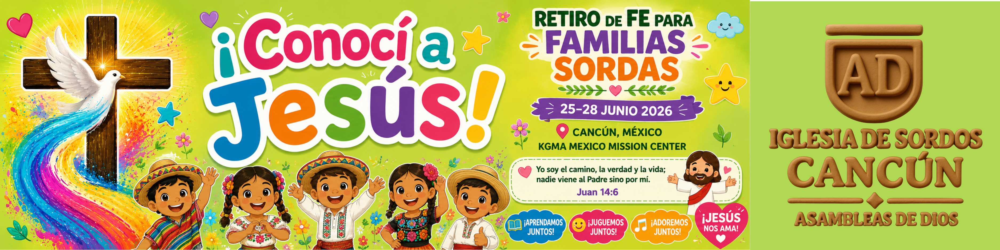

Why This Matters
Deaf individuals in Mexico are among the most spiritually and socially isolated communities in Latin America. Many have never heard the Gospel — not because they reject it, but because it has never been presented in sign language.
The Mexico Deaf Family Faith Retreat brings together deaf families from the Cancún region for 4 days of sign language worship, Bible teaching, and community — the first gathering of its kind in eastern Mexico.
멕시코 농인들에게 예수님을 만나는 방법, 예배의 방법을 전하는 신앙의 씨앗을 뿌리는 역사적 시작입니다.
Who Is Serving
🇰🇷 Korean Deaf Pastor
A deaf pastor from Korea will lead worship and Bible teaching in sign language, bringing 40+ years of deaf ministry experience.
🇲🇽 Mexico City Deaf Pastors
A deaf pastor couple from Mexico City will serve as sign language ministry leaders for the retreat program.
🏛️ Local Cancún Church
Local hearing pastors and congregation members in Cancún provide logistical support and volunteer service.
👶 VBS Volunteer Team
Mexican local volunteers and Korean missionaries will lead Vacation Bible School for deaf children alongside their parents.
Children's VBS

Deaf children will join their parents through age-appropriate VBS programs in sign language — led by Mexican volunteers and Korean missionary teachers. / 농인 자녀들도 부모와 함께 어린이 성경학교(VBS)에 참여하게 됩니다.
📡 You Will Witness It Live
Every moment of this retreat will be shared with you through the New York Deaf Church website and Facebook page. You will see with your own eyes what God is doing in Mexico.
수련회 기간 동안의 모든 순간은 뉴욕농아인교회 홈페이지와 페이스북을 통해 여러분에게 전해집니다. 성령이 일하시는 기적을 직접 보게 될 것입니다.